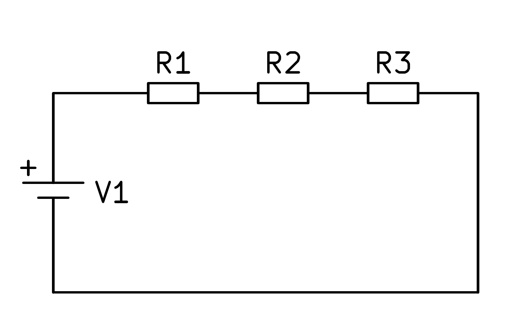
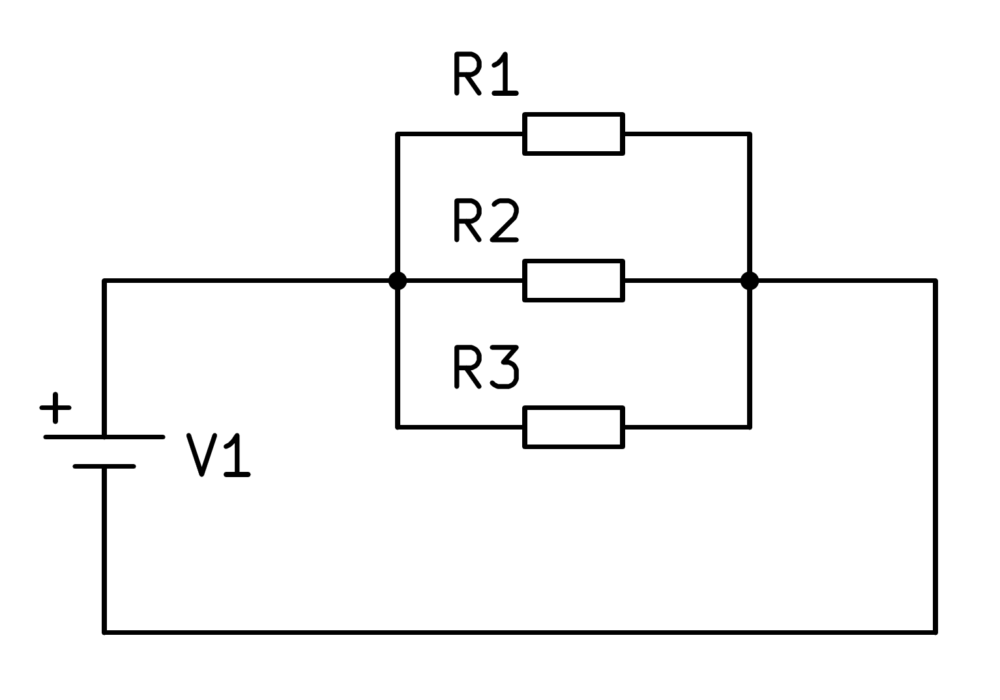
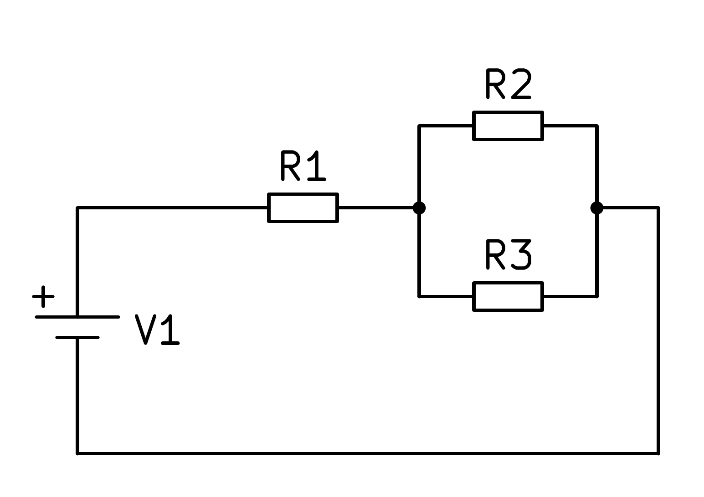
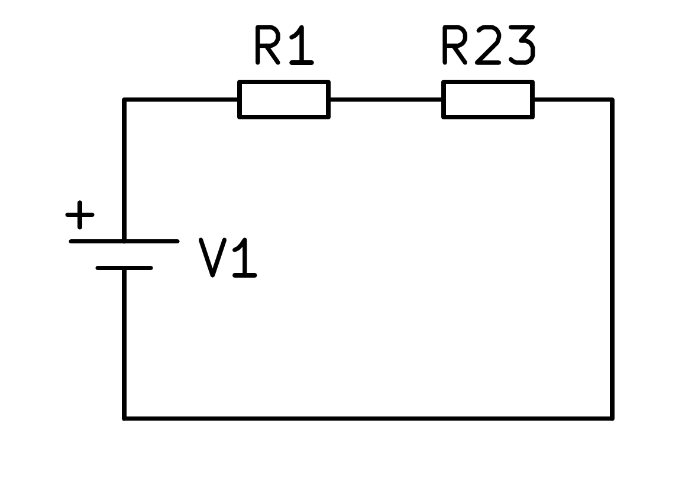
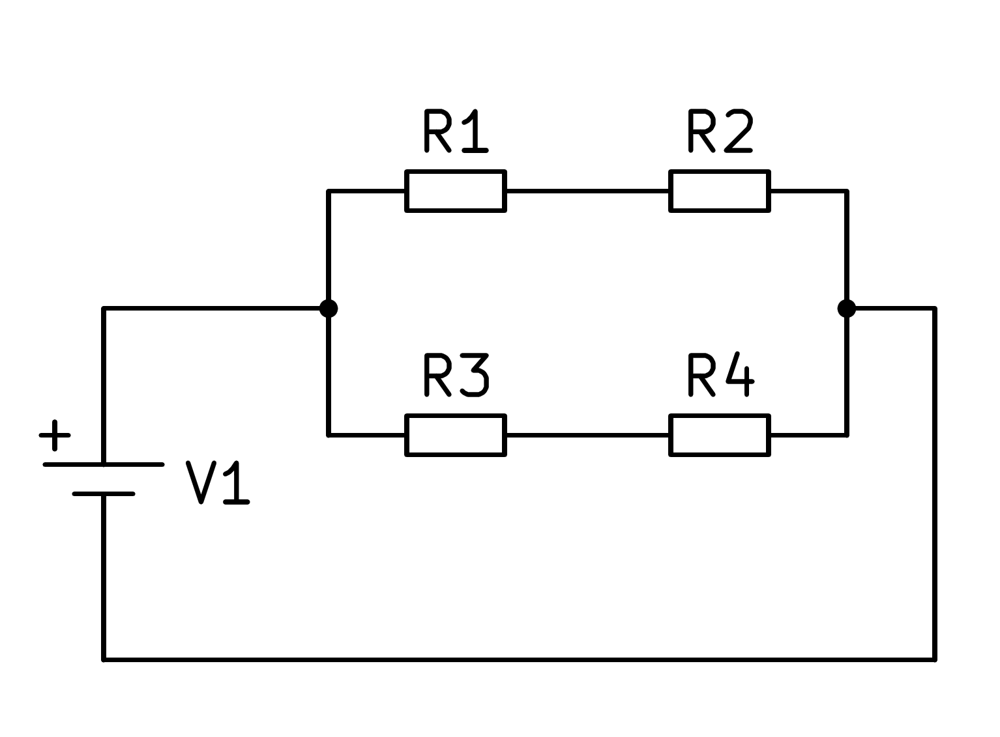
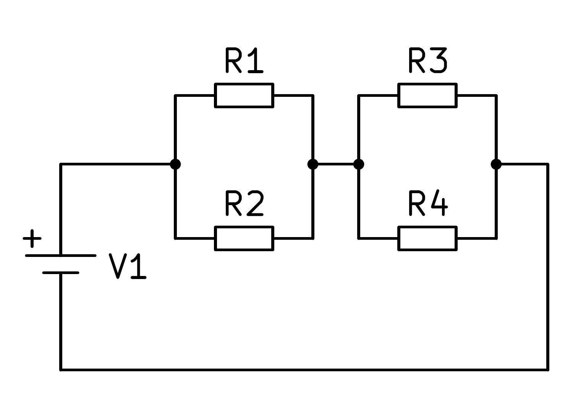
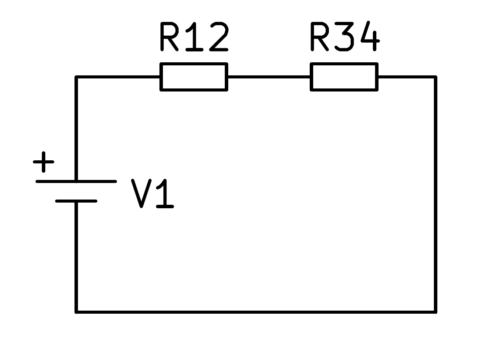

Equivalent resistors¶
In this unit we will study the equivalent resistances of circuits with resistors in series, with resistors in parallel and with resistors in mixed assemblies.

A resistor equivalent to a circuit with several resistors is that through which the same current will pass as through the circuit when feeding them with the same voltage source.
Index of contents:
- Equivalent resistance of a series circuit
- Equivalent resistance of a parallel circuit
- Equivalent resistance of a parallel-series circuit
- Equivalent resistance of a series-parallel circuit
- Equivalent resistance of a two series-parallel circuit
- Equivalent resistance of a two-parallel-series circuit
- Exercises
- Cuestionarios
Equivalent resistance of a series circuit¶
A circuit with resistors in series is configured as the one in the following figure:

This circuit can be simplified to a circuit with a single resistor that has a value equivalent to the two resistors in series. This circuit is called an equivalent circuit and the same current will flow through it as through the circuit with two resistors.
To calculate the value of the resistance equivalent to a series circuit, the values of all the resistors in series must be added according to the following formula:

In the event that the circuit is composed of three resistors in series:
{kind=link}
the values of the three resistors must be added to calculate the value of the equivalent resistance, according to the following formula:

If we add a resistance in series to a circuit, the total resistance will always increase and therefore the total current will always decrease.
Equivalent resistance of a parallel circuit¶
In the following figure you can see a circuit with resistors in parallel and its equivalent circuit with a single resistor:

In the case of a circuit with resistances in parallel, the equivalent resistance will be calculated with the inverse of the sum of the inverses of the resistances according to the following formula:

The equivalent resistance of a parallel will always be less than any of the resistances of resistors that form the parallel.
If the circuit is made up of three resistors in parallel, the calculation can be extended to three resistors in total according to the following formula:
{kind=link}

If we add a resistance in parallel to a circuit, the total resistance will always decrease and therefore the total current will always increase.
Equivalent resistance of a parallel-series circuit¶
Mixed circuits are made up of resistors in series and resistors in parallel. To solve the mixed circuits, first it will be necessary to solve the interior series or parallel circuits and with the already simplified circuit, solve the exterior series or parallel circuits.
Below we will see several examples.
In the following figure we can see a mixed circuit of three resistors:
{kind=link}
In this mixed circuit, first you have to solve the parallel formed by resistors R2 and R3, with which the circuit is simplified according to the following image.
{kind=link}
The resistances R1 and R23 can then be added together to calculate the equivalent resistance of the complete circuit:
Equivalent resistance of a series-parallel circuit¶
In the following figure we can see another mixed circuit of three resistors.
In this mixed circuit, first you have to solve the series formed by resistors R1 and R2 by adding their values, with which the circuit is simplified according to the following image:

The parallel of resistors R12 and R3 can then be calculated to find the equivalent resistance of the complete circuit:
Equivalent resistance of a two series-parallel circuit¶
In the following figure we can see a mixed circuit of four resistors:
{kind=link}
In this mixed circuit, first you have to calculate the series equivalent of the resistors R1 and R2 and on the other hand the series equivalent of the resistors R3 and R4, with which the circuit is simplified according to the following image:

Once the circuit has been simplified, the parallel of the two resistors R12 and R34 can be calculated according to the corresponding formula:
Equivalent resistance of a two-parallel-series circuit¶
In the following figure we can see another mixed circuit of four resistors:
{kind=link}
In this mixed circuit, first you have to calculate the parallel equivalent of the resistors R1 and R2 and on the other hand the parallel equivalent of the resistors R3 and R4, with which the circuit is simplified according to the following image:
{kind=link}
Once the circuit has been simplified, the series of the two resistors R12 and R34 can be calculated according to the corresponding formula: